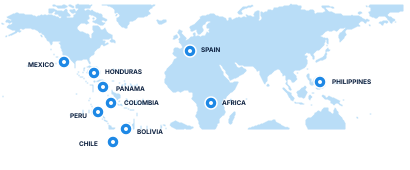

Evangelism
We clearly proclaim the Gospel and invite people to respond to Jesus Christ.
Jesus Generation is an international evangelical movement with a unique strategy to reach the world's largest unreached people group: school-age children.
Why Jesus Generation matters
School-age children gather every day in one of the most influential environments in their lives: the school. Jesus Generation has spent decades developing a ministry strategy that places trusted Christian leaders within those school communities.
School chaplaincy gives us something extraordinarily valuable: presence. Chaplains can build relationships with students, teachers, families, and communities over time.
The objective is not simply to place chaplains in schools. The objective is to reach a generation for Jesus Christ.
Our StoryWhat we do
We clearly proclaim the Gospel and invite people to respond to Jesus Christ.
We help believers grow into a lifelong relationship with Christ.
We mobilize teams to serve alongside established national leaders.
We develop leaders who continue the work and multiply it in their nations.
Our primary strategy for sustained ministry among school-age children.
Global impact
Jesus Generation grows out of more than three decades of international ministry. The significance is not ultimately found in numbers. It is found in children hearing the Gospel, families receiving ministry, and national Christian leaders taking responsibility for their own communities.
Our Story
Stories of hope
Stories will be published here only after they are verified and permission is confirmed. No names or quotations are shown until then.
StoriesMission trips
Jesus Generation mission trips provide an unusual opportunity for direct Gospel ministry. Teams serve alongside established national leaders, often entering school communities where students and faculty are already gathered.
How you can help
Take the Gospel personally into schools and communities.
Use what God has placed in your hands.
Bring your church, ministry, or organization alongside the mission.
Provide the resources that allow the Gospel, training, and discipleship to reach farther.
Go. Serve. Partner. Give. Help us raise a generation for Jesus.